CIBIO Centre for Integrative Biology
Author: Luca Pizzagalli
Supervisor: Prof. Gianluca Lattanzi
Academic year 2017/2018
Alper Joshua et al. Methods in Enzymology, 2013
Alper Joshua et al. Methods in Enzymology, 2013
2D Asymmetric dumbbell, a sphere for the cell's body and a sphere for the area covered by the beating flagella
Wysocki Adam et al. Phys. Rev. E, May 2015
$$ \frac{d\boldsymbol{r}(t)}{dt} = v_0 \boldsymbol{e}(t) + \mu \boldsymbol{F}(\boldsymbol{r},\boldsymbol{e}) + \boldsymbol{\eta}(t) $$
$$ \langle \boldsymbol{\eta}(t) \boldsymbol{\eta}(t') \rangle = 2 k_b T \mu \boldsymbol1 \delta (t-t') $$
$$ \boldsymbol{F}(\boldsymbol{r},\boldsymbol{e}) = \boldsymbol{F}(\boldsymbol{r}_b) + \boldsymbol{F}(\boldsymbol{r}_f) $$
$$ = -\nabla U_b(\boldsymbol{r}_b) - \nabla U_f(\boldsymbol{r}_f) $$
Truncated Lennard-Jones potential:
$$ U_b(\boldsymbol{r}_b) = 4 \epsilon k_b T \Big[\Big(\frac{a_b}{|\boldsymbol{r}_b - \boldsymbol{r}_w|}\Big)^{12} - \Big(\frac{a_b}{|\boldsymbol{r}_b - \boldsymbol{r}_w|}\Big)^6\Big] + \epsilon $$ $$ U_f(\boldsymbol{r}_f) = 4 \epsilon k_b T \Big[\Big(\frac{a_f}{|\boldsymbol{r}_f - \boldsymbol{r}_w|}\Big)^{12} - \Big(\frac{a_f}{|\boldsymbol{r}_f - \boldsymbol{r}_w|}\Big)^6\Big] + \epsilon $$
$$ \frac{d\boldsymbol{e}(t)}{dt} = \Big( \frac{\boldsymbol{T}(\boldsymbol{r},\boldsymbol{e}, t)}{\tau} + \boldsymbol{\xi} \Big) \times \boldsymbol{e}(t) $$
$$ \langle \boldsymbol{\xi}_z(t) \boldsymbol{\xi}_z(t') \rangle = \frac{2 k_b T}{\tau_p} \delta (t-t') $$
Alternative expression, more useful for numerical computation
$$\frac{d \vartheta(t)}{dt} = \frac{T_z(\boldsymbol{r},\vartheta)}{\tau} + \xi_z(t)$$| variable |
|---|
| $\tiny{a_b}$ |
| $\tiny{a_j}$ |
| $\tiny{l}$ |
| $\tiny{c}$ |
| $\tiny{v_0}$ |
| $\tiny{k_b T \mu}$ |
| $\tiny{\frac{\tau_p}{k_b T}}$ |
| $\tiny{\frac{\tau}{k_b T}}$ |
| $\tiny{\epsilon}$ |
| $\tiny{\mu [ t_{\text{s}} ]}$ |
| $\tiny{\mu [\frac{T_t}{\tau} ]}$ |
| $\tiny{\sigma [ \frac{T_t}{\tau} ]}$ |
| $\tiny{\mu [ t_{\text{t}} ]}$ |
| $\tiny{\sigma [ t_{\text{t}} ]}$ |
| value | m. u. |
|---|---|
| $\tiny{5.0}$ | $\tiny{\mu m}$ |
| $\tiny{7.5}$ | $\tiny{\mu m}$ |
| $\tiny{7.5}$ | $\tiny{\mu m}$ |
| $\tiny{0.0}$ | $\tiny{\mu m}$ |
| $\tiny{ 60 - 110}$ | $\tiny{\mu m/s}$ |
| $\tiny{??}$ | $\tiny{\mu m^2/s}$ |
| $\tiny{??}$ | $\tiny{s}$ |
| $\tiny{0.15}$ | $\tiny{s}$ |
| $\tiny{10}$ | $\tiny{1}$ |
| $\tiny{11.2}$ | $\tiny{s}$ |
| $\tiny{0.75}$ | $\tiny{rad/s}$ |
| $\tiny{0.75}$ | $\tiny{rad/s}$ |
| $\tiny{2.0}$ | $\tiny{s}$ |
| $\tiny{1.5}$ | $\tiny{s}$ |
Vasily Kantsler et al. PNAS, January 2013
Mean square displacement from experiment in open space
Tanya Ostapenko et al. Phys. Rev. Lett., February 2018
Radial probability $P(r)$ in confined environment
Experiment
Tanya Ostapenko et al. Phys. Rev. Lett., February 2018
Simulation
code available at: github.com/LucaPizzagalli/swimmers-brownian-simulation
Experiment
Vasily Kantsler et al. PNAS, January 2013
Simulation
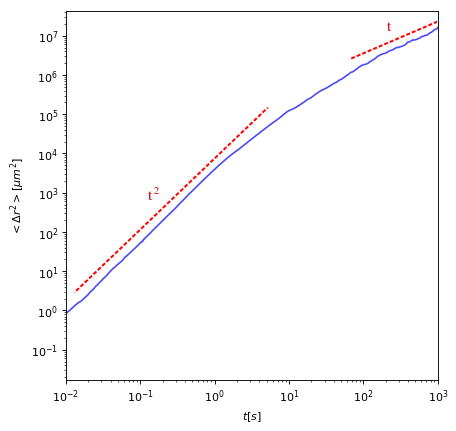Experiment
Tanya Ostapenko et al. Phys. Rev. Lett., February 2018
Simulation
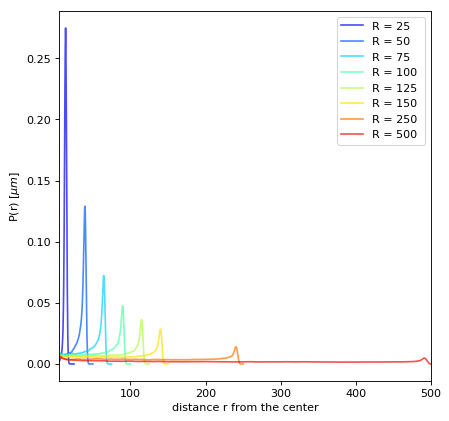| $\tiny{a_b}$ |
| $\tiny{a_j}$ |
| $\tiny{l}$ |
| $\tiny{c}$ |
| $\tiny{\epsilon}$ |
| $\tiny{v_0}$ |
| $\tiny{k_b T \mu}$ |
| $\tiny{\frac{\tau}{k_b T}}$ |
| $\tiny{\frac{\tau_p}{k_b T}}$ |
| $\tiny{\mu [ t_{\text{s}} ]}$ |
| $\tiny{\mu [\frac{T_t}{\tau} ]}$ |
| $\tiny{\sigma [ \frac{T_t}{\tau} ]}$ |
| $\tiny{\mu [ t_{\text{t}} ]}$ |
| $\tiny{\sigma [ t_{\text{t}} ]}$ |
| $\tiny{5.0}$ | $\tiny{\mu m}$ |
| $\tiny{7.5}$ | $\tiny{\mu m}$ |
| $\tiny{7.5}$ | $\tiny{\mu m}$ |
| $\tiny{0.0}$ | $\tiny{\mu m}$ |
| $\tiny{10}$ | $\tiny{1}$ |
| $\tiny{70}$ | $\tiny{\mu m/s}$ |
| $\tiny{14}$ | $\tiny{\mu m^2/s}$ |
| $\tiny{2.0}$ | $\tiny{s}$ |
| $\tiny{2.0}$ | $\tiny{s}$ |
| $\tiny{11.2}$ | $\tiny{s}$ |
| $\tiny{0.75}$ | $\tiny{rad/s}$ |
| $\tiny{0.75}$ | $\tiny{rad/s}$ |
| $\tiny{2.0}$ | $\tiny{s}$ |
| $\tiny{1.5}$ | $\tiny{s}$ |
Msd in open space
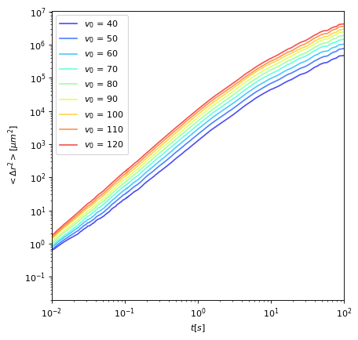$P(r)$ in confinement
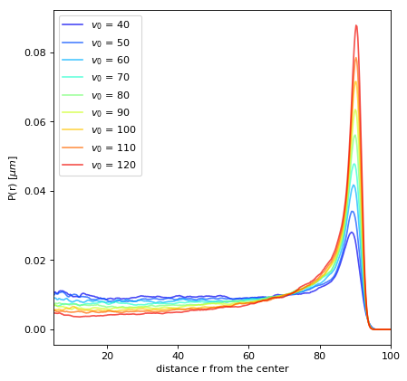Msd in open space
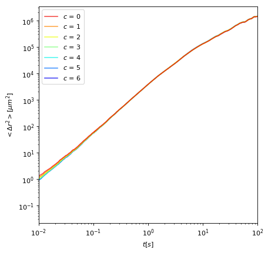$P(r)$ in confinement
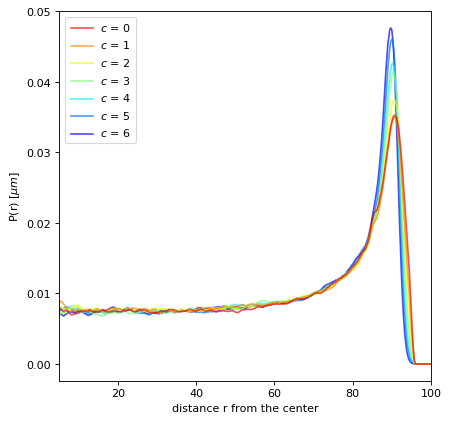Msd in open space
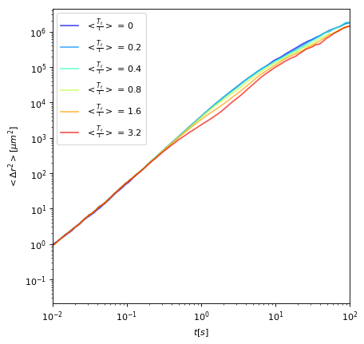$P(r)$ in confinement
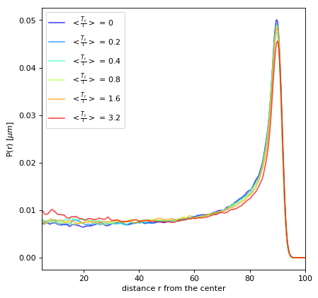Msd in open space
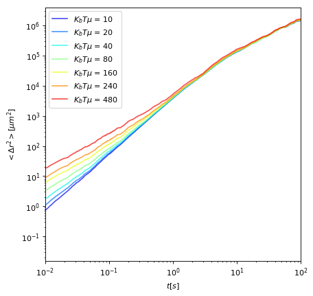$P(r)$ in confinement
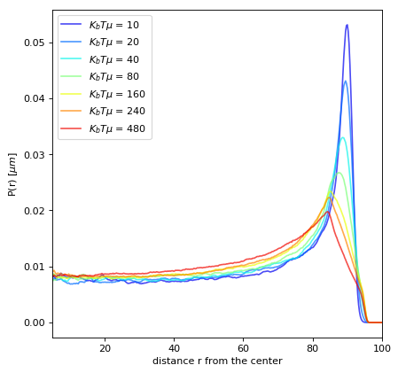Msd in open space
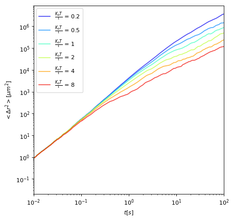$P(r)$ in confinement
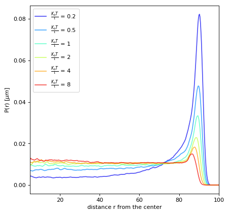Four components for the force:
$$ \boldsymbol{F}(\boldsymbol{r}_1,\boldsymbol{e}_1,\boldsymbol{r}_1,\boldsymbol{e}_2) = \\ -\nabla U_{bb}(\boldsymbol{r}_{1,b},\boldsymbol{r}_{2,b}) - \nabla U_{ff}(\boldsymbol{r}_{1,f},\boldsymbol{r}_{2,f}) \\ - \nabla U_{bf}(\boldsymbol{r}_{1,b},\boldsymbol{r}_{2,f}) - \nabla U_{bf}(\boldsymbol{r}_{1,f},\boldsymbol{r}_{2,b}) $$
from truncated Lennard-Jones potentials
Linear density of a diffusion of C. reinhardtii in a test tube, 1 minute after centrifugation.
Experiment
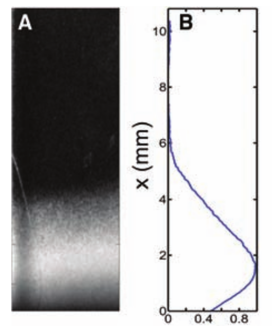Polin Marco et al. Science, Jul 2009
Simulation
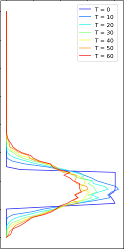